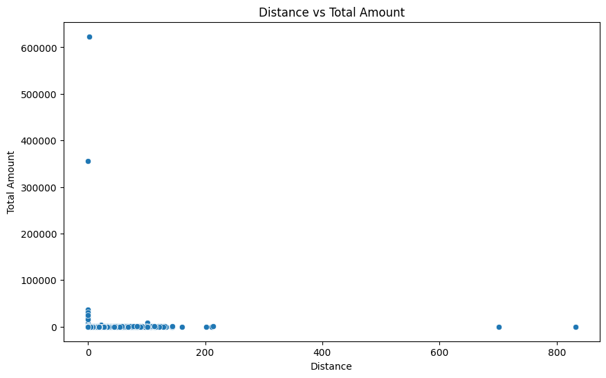

Análisis Exploratorio de los Datos EDA#
Para realizar un Análisis Exploratorio de Datos (EDA), es fundamental comprender tanto la estructura como las características principales del conjunto de datos. Este proceso permite identificar patrones, detectar posibles valores atípicos, evaluar la calidad de los datos y entender la distribución de las variables, lo que facilita la posterior toma de decisiones. Durante el EDA, se pueden aplicar diversas técnicas visuales y estadísticas que proporcionan una visión más clara sobre las relaciones entre las variables, la presencia de posibles problemas de calidad de los datos (como valores faltantes o duplicados) y la normalidad de las distribuciones. En este contexto, el análisis permitirá determinar los aspectos más relevantes a tratar en las siguientes fases del proyecto, como la limpieza de datos, la selección de características y la construcción de modelos predictivos.
Inspección de la estructura de los datos
Manejo de valores faltantes
Identificación de valores atípicos
Distribución de variables
Correlación entre variables
Análisis de variables categóricas
NYC Data#
Códigos y salidas del EDA#
Para realizar un Análisis Exploratorio de Datos (EDA) de manera efectiva, es necesario importar librerías clave que faciliten la manipulación, visualización y análisis de los datos. Entre las más comunes se encuentran pandas para la manipulación de datos, numpy para operaciones matemáticas, matplotlib y seaborn para la creación de gráficos visuales, y scipy para análisis estadísticos. Estas librerías proporcionan las herramientas necesarias para explorar y entender las características principales del conjunto de datos.
import pandas as pd
import matplotlib.pyplot as plt
import seaborn as sns
import plotly.express as px
import numpy as np
import geopandas as gpd
import folium
Carga y visualización de los datos#
Contenido Descripción de las variables
VendorID: Identificador del proveedor que suministra el registro.
1 = Tecnologías móviles creativas, LLC
2 = VeriFone Inc.
tpep_pickup_datetime: La fecha y hora en que se activó el medidor
tpep_dropoff_datetime: La fecha y hora en que se apagó el medidor.
Passenger_count: El número de pasajeros en el vehículo, según lo ingresado por el conductor.
Trip_distance: La distancia del viaje en millas, según lo registrado por el taxímetro.
PULocationID: Zona de Taxis TLC donde se activó el taxímetro.
DOLocationID: Zona de Taxis TLC donde el taxímetro fue desactivado. - RateCodeID: El código de tarifa aplicable al final del viaje.
1 = Tarifa estándar
2 = JFK
3 = Newark
4 = Nassau o Westchester
5 = Tarifa negociada
6 = Viaje en grupo
Store_and_fwd_flag: Indica si el registro del viaje se almacenó en la memoria del vehículo antes de la transmisión al proveedor debido a la falta de conexión al servidor.
Y = Viaje de almacenamiento y reenvío
N = No es un viaje de almacenamiento y reenvío
Payment_type: Cómo el pasajero pagó el viaje, representado por un código numérico.
1 = Tarjeta de crédito
2 = Efectivo
3 = Sin cargo
4 = Disputa
5 = Desconocido
6 = Viaje anulado
Fare_amount: La tarifa calculada por el taxímetro en función del tiempo y la distancia.
Extra: Cargos adicionales, que actualmente incluyen solo los cargos por hora pico y noche de \(0,50 y \)1.
MTA_tax: Se agregará automáticamente un impuesto de $0,50 según la tarifa medida.
Improvement_surcharge: A $0.30 surcharge added at the start of the trip, implemented since 2015.
Tip_amount: Propina con tarjeta de crédito. (Nota: Las propinas en efectivo no se registran aquí).
Tolls_amount: Total de peajes pagados durante el viaje.
Total_amount: El cargo total a los pasajeros, excluidas las propinas en efectivo.
Note
para la lectura de los datos en formato .parquet se instala una extensión de la libreria pandas, tal como se muestra a continuación*pip install pandas fastparquet*
df_taxi = pd.read_parquet(r'C:\Users\PC\Desktop\ML_clase\jbook_ml20251\data\yellow_tripdata_2019-01.parquet')
df_taxi.shape
(7696617, 19)
df_taxi.head(10)
| VendorID | tpep_pickup_datetime | tpep_dropoff_datetime | passenger_count | trip_distance | RatecodeID | store_and_fwd_flag | PULocationID | DOLocationID | payment_type | fare_amount | extra | mta_tax | tip_amount | tolls_amount | improvement_surcharge | total_amount | congestion_surcharge | airport_fee | |
|---|---|---|---|---|---|---|---|---|---|---|---|---|---|---|---|---|---|---|---|
| 0 | 1 | 2019-01-01 00:46:40 | 2019-01-01 00:53:20 | 1.0 | 1.5 | 1.0 | N | 151 | 239 | 1 | 7.0 | 0.5 | 0.5 | 1.65 | 0.00 | 0.3 | 9.95 | NaN | NaN |
| 1 | 1 | 2019-01-01 00:59:47 | 2019-01-01 01:18:59 | 1.0 | 2.6 | 1.0 | N | 239 | 246 | 1 | 14.0 | 0.5 | 0.5 | 1.00 | 0.00 | 0.3 | 16.30 | NaN | NaN |
| 2 | 2 | 2018-12-21 13:48:30 | 2018-12-21 13:52:40 | 3.0 | 0.0 | 1.0 | N | 236 | 236 | 1 | 4.5 | 0.5 | 0.5 | 0.00 | 0.00 | 0.3 | 5.80 | NaN | NaN |
| 3 | 2 | 2018-11-28 15:52:25 | 2018-11-28 15:55:45 | 5.0 | 0.0 | 1.0 | N | 193 | 193 | 2 | 3.5 | 0.5 | 0.5 | 0.00 | 0.00 | 0.3 | 7.55 | NaN | NaN |
| 4 | 2 | 2018-11-28 15:56:57 | 2018-11-28 15:58:33 | 5.0 | 0.0 | 2.0 | N | 193 | 193 | 2 | 52.0 | 0.0 | 0.5 | 0.00 | 0.00 | 0.3 | 55.55 | NaN | NaN |
| 5 | 2 | 2018-11-28 16:25:49 | 2018-11-28 16:28:26 | 5.0 | 0.0 | 1.0 | N | 193 | 193 | 2 | 3.5 | 0.5 | 0.5 | 0.00 | 5.76 | 0.3 | 13.31 | NaN | NaN |
| 6 | 2 | 2018-11-28 16:29:37 | 2018-11-28 16:33:43 | 5.0 | 0.0 | 2.0 | N | 193 | 193 | 2 | 52.0 | 0.0 | 0.5 | 0.00 | 0.00 | 0.3 | 55.55 | NaN | NaN |
| 7 | 1 | 2019-01-01 00:21:28 | 2019-01-01 00:28:37 | 1.0 | 1.3 | 1.0 | N | 163 | 229 | 1 | 6.5 | 0.5 | 0.5 | 1.25 | 0.00 | 0.3 | 9.05 | NaN | NaN |
| 8 | 1 | 2019-01-01 00:32:01 | 2019-01-01 00:45:39 | 1.0 | 3.7 | 1.0 | N | 229 | 7 | 1 | 13.5 | 0.5 | 0.5 | 3.70 | 0.00 | 0.3 | 18.50 | NaN | NaN |
| 9 | 1 | 2019-01-01 00:57:32 | 2019-01-01 01:09:32 | 2.0 | 2.1 | 1.0 | N | 141 | 234 | 1 | 10.0 | 0.5 | 0.5 | 1.70 | 0.00 | 0.3 | 13.00 | NaN | NaN |
Georreferenciación de las zonas de inicio y finalización de la carrera#
En este proceso, se comienza leyendo un archivo CSV que contiene información sobre las zonas de taxis en Nueva York. Utilizando este archivo, se une el DataFrame de los viajes de taxis con las zonas correspondientes a las ubicaciones de recogida (PULocationID) y entrega (DOLocationID). La unión se hace a través de la columna LocationID del archivo de zonas, lo que nos permite obtener los nombres de las zonas de recogida y destino para cada viaje. Posteriormente, se generan dos diccionarios con las coordenadas de algunas de las zonas de recogida y entrega, representadas por nombres de zonas como claves y sus respectivas coordenadas geográficas como valores.
Con la ayuda de la librería folium, se crea un mapa centrado en Nueva York. Luego, se define una función add_zone_to_map que utiliza los diccionarios de coordenadas para agregar marcadores en forma de círculos al mapa. Cada círculo representa una zona de recogida o entrega, donde el color del borde y el relleno de los círculos se define según la zona (azul para recogida, rojo para entrega). El tamaño de los círculos es pequeño, con un radio de 5, y tienen un 60% de opacidad en su relleno. Finalmente, se añaden las zonas de recogida y entrega al mapa, que se visualiza mostrando círculos de colores en las ubicaciones correspondientes.
zonas_df = pd.read_csv(r"C:\Users\PC\Desktop\ML_clase\jbook_ml20251\data\taxi+_zone_lookup.csv")
# Unir el DataFrame de taxis con las zonas usando PULocationID
df_taxi = df_taxi.merge(zonas_df[['LocationID', 'Zone']], left_on='PULocationID', right_on='LocationID', how='left')
# Unir también el DOLocationID para obtener la zona de destino
df_taxi = df_taxi.merge(zonas_df[['LocationID', 'Zone']], left_on='DOLocationID', right_on='LocationID', how='left', suffixes=('_pickup', '_dropoff'))
Show code cell source
# Coordenadas de algunas zonas de recogida y entrega (ejemplo)
pickup_zones_coords = {
'Manhattan Valley': [40.8071, -73.9610],
'Upper West Side South': [40.7850, -73.9750],
'Upper East Side North': [40.7847, -73.9523],
'Queensbridge/Ravenswood': [40.7612, -73.9442],
'Midtown North': [40.7549, -73.9808],
'Sutton Place/Turtle Bay North': [40.7566, -73.9689],
'Lenox Hill West': [40.7661, -73.9630],
'West Chelsea/Hudson Yards': [40.7475, -74.0024],
'Stuy Town/Peter Cooper Village': [40.7311, -73.9790],
'Murray Hill': [40.7450, -73.9819],
'Gramercy': [40.7365, -73.9857],
'Central Harlem': [40.8115, -73.9465],
'Hamilton Heights': [40.8230, -73.9453],
'Greenwich Village North': [40.7375, -73.9987],
'Midtown Center': [40.7550, -73.9850],
'LaGuardia Airport': [40.7769, -73.8737],
'Little Italy/NoLiTa': [40.7223, -73.9963],
'TriBeCa/Civic Center': [40.7168, -74.0070],
'Upper East Side South': [40.7736, -73.9567],
'Yorkville West': [40.7741, -73.9503],
'JFK Airport': [40.6413, -73.7781],
'NV': [40.7038, -74.0148],
'Lincoln Square East': [40.7713, -73.9863],
'West Village': [40.7336, -74.0033],
'Kips Bay': [40.7422, -73.9763],
'Flatiron': [40.7411, -73.9897],
'Midtown East': [40.7551, -73.9760],
'Lenox Hill East': [40.7673, -73.9579],
'East Chelsea': [40.7450, -73.9989],
'Financial District South': [40.7057, -74.0125],
'East Harlem North': [40.7954, -73.9384],
'East Village': [40.7250, -73.9816],
'East Harlem South': [40.7982, -73.9405],
'UN/Turtle Bay South': [40.7484, -73.9680],
'Lower East Side': [40.7158, -73.9848],
'Clinton East': [40.7590, -73.9900],
'Lincoln Square West': [40.7702, -73.9873],
'Alphabet City': [40.7261, -73.9819],
'Midtown South': [40.7440, -73.9930],
'Two Bridges/Seward Park': [40.7110, -73.9865],
'Chinatown': [40.7150, -73.9985],
'Central Park': [40.7851, -73.9683],
'Penn Station/Madison Sq West': [40.7500, -73.9933],
'Meatpacking/West Village West': [40.7400, -74.0065],
'Clinton West': [40.7485, -73.9962],
'Greenwich Village South': [40.7323, -73.9988],
'Central Harlem North': [40.8105, -73.9440],
'Bay Ridge': [40.6300, -74.0280],
'Bath Beach': [40.6075, -73.9887],
'Park Slope': [40.6625, -73.9895],
'SoHo': [40.7244, -73.9973],
'Battery Park City': [40.7130, -74.0160],
'World Trade Center': [40.7115, -74.0134],
'Fort Greene': [40.6928, -73.9745],
'Union Sq': [40.7359, -73.9911],
'Hudson Sq': [40.7275, -74.0063],
'Long Island City/Hunters Point': [40.7451, -73.9524],
'Yorkville East': [40.7729, -73.9511],
'Sunnyside': [40.7461, -73.9245],
'Bloomingdale': [40.7620, -73.9886],
'Morningside Heights': [40.8100, -73.9640],
'East Williamsburg': [40.7106, -73.9499],
'Prospect Heights': [40.6740, -73.9640],
'Brooklyn Heights': [40.6960, -73.9970],
'Garment District': [40.7550, -73.9940],
'Hunts Point': [40.8270, -73.8798],
'Melrose South': [40.8190, -73.9190],
'Washington Heights South': [40.8450, -73.9400],
'Washington Heights North': [40.8630, -73.9310],
'Seaport': [40.7090, -74.0036],
'Financial District North': [40.7080, -74.0100],
'Boerum Hill': [40.6834, -73.9912],
'Woodside': [40.7459, -73.8881],
'Steinway': [40.7651, -73.9065],
'Rego Park': [40.7255, -73.8576],
'Manhattanville': [40.8250, -73.9575],
'Times Sq/Theatre District': [40.7580, -73.9855],
'Astoria': [40.7644, -73.9249],
'DUMBO/Vinegar Hill': [40.7033, -73.9870],
'Sunset Park West': [40.6402, -74.0103],
'University Heights/Morris Heights': [40.8670, -73.9204],
'Kew Gardens': [40.7197, -73.8449],
'Downtown Brooklyn/MetroTech': [40.6928, -73.9866],
'Jackson Heights': [40.7511, -73.8830],
'Elmhurst': [40.7411, -73.8805],
'Red Hook': [40.6754, -74.0143],
'Williamsburg (North Side)': [40.7162, -73.9546],
'Old Astoria': [40.7712, -73.9221],
'Mount Hope': [40.8616, -73.8942],
'Flatbush/Ditmas Park': [40.6367, -73.9625],
'Bushwick South': [40.6770, -73.9210],
'Bedford': [40.7113, -73.9551],
'Stuyvesant Heights': [40.6754, -73.9200],
'Battery Park': [40.7072, -74.0134],
'Cobble Hill': [40.6857, -73.9982],
'Greenpoint': [40.7400, -73.9510],
'Williamsburg (South Side)': [40.7086, -73.9571],
'Crown Heights North': [40.6710, -73.9440],
'Windsor Terrace': [40.6602, -73.9760],
'South Jamaica': [40.6699, -73.8046],
'East Elmhurst': [40.7615, -73.8784],
'South Williamsburg': [40.7102, -73.9617],
'Ocean Hill': [40.6761, -73.9189],
'Clinton Hill': [40.6851, -73.9586],
'Mott Haven/Port Morris': [40.8084, -73.9143],
'East New York': [40.6699, -73.8710],
'Kensington': [40.6432, -73.9774],
'Ridgewood': [40.7012, -73.9073],
'Carroll Gardens': [40.6844, -73.9960],
'West Concourse': [40.8235, -73.9045],
'Williamsbridge/Olinville': [40.8794, -73.8681],
'South Ozone Park': [40.6752, -73.8261],
'East New York/Pennsylvania Avenue': [40.6747, -73.8877],
'Westchester Village/Unionport': [40.8401, -73.8694],
'Highbridge': [40.8470, -73.9240],
'Gowanus': [40.6750, -73.9890],
'Schuylerville/Edgewater Park': [40.8580, -73.8267],
'Crotona Park East': [40.8499, -73.9072],
'Long Island City/Queens Plaza': [40.7445, -73.9482],
'Queens Village': [40.7280, -73.7705],
'Columbia Street': [40.6785, -73.9942],
'Saint Albans': [40.6950, -73.7734],
'Bushwick North': [40.7039, -73.9227],
'Marble Hill': [40.8692, -73.9195],
'Brooklyn Navy Yard': [40.7241, -73.9755],
'East Tremont': [40.8614, -73.8670],
'Jamaica': [40.6695, -73.7950],
'Van Cortlandt Village': [40.8766, -73.9025],
'East Concourse/Concourse Village': [40.8382, -73.9266],
'Howard Beach': [40.6565, -73.8477],
'Prospect Park': [40.6602, -73.9689],
'Rosedale': [40.6715, -73.7628],
'Bellerose': [40.7363, -73.7498],
'Soundview/Castle Hill': [40.8287, -73.8580],
'Baisley Park': [40.6744, -73.8192],
'Springfield Gardens North': [40.6665, -73.7708],
'Norwood': [40.8760, -73.8902],
'West Farms/Bronx River': [40.8374, -73.8591],
'Starrett City': [40.6446, -73.8583],
'Maspeth': [40.7297, -73.9022],
'Middle Village': [40.7343, -73.8880],
'Prospect-Lefferts Gardens': [40.6550, -73.9608],
'Flushing Meadows-Corona Park': [40.7491, -73.8447],
'Homecrest': [40.6023, -73.9667],
'Corona': [40.7423, -73.8608],
'Richmond Hill': [40.6958, -73.8318]
}
dropoff_zones_coords = {
'Upper West Side South': [40.7762, -73.9822],
'West Chelsea/Hudson Yards': [40.7475, -74.0024],
'Upper East Side North': [40.7736, -73.9566],
'Queensbridge/Ravenswood': [40.7590, -73.9442],
'Sutton Place/Turtle Bay North': [40.7498, -73.9678],
'Astoria': [40.7690, -73.9442],
'Union Sq': [40.7359, -73.9911],
'Midtown East': [40.7486, -73.9739],
'Manhattan Valley': [40.7900, -73.9549],
'Boerum Hill': [40.6830, -73.9896],
'Murray Hill': [40.7411, -73.9887],
'Gramercy': [40.7369, -73.9876],
'Lenox Hill West': [40.7750, -73.9580],
'West Concourse': [40.6840, -73.9950],
'Central Harlem North': [40.8120, -73.9450],
'Flatiron': [40.7411, -73.9897],
'Clinton West': [40.7410, -74.0027],
'World Trade Center': [40.7115, -74.0134],
'East Village': [40.7272, -73.9810],
'Park Slope': [40.6629, -73.9896],
'NV': [40.7580, -73.9855],
'Lincoln Square East': [40.7736, -73.9832],
'Upper West Side North': [40.7790, -73.9810],
'Elmhurst/Maspeth': [40.7400, -73.8830],
'Yorkville West': [40.7790, -73.9520],
'Lenox Hill East': [40.7760, -73.9570],
'Midtown Center': [40.7480, -73.9845],
'Kips Bay': [40.7420, -73.9760],
'Washington Heights North': [40.8610, -73.9330],
'East Harlem South': [40.7910, -73.9440],
'Central Harlem': [40.8116, -73.9465],
'Financial District South': [40.7074, -74.0113],
'Mott Haven/Port Morris': [40.8170, -73.9220],
'Greenwich Village North': [40.7336, -74.0027],
'East Chelsea': [40.7440, -74.0010],
'Stuy Town/Peter Cooper Village': [40.7360, -73.9810],
'Greenpoint': [40.7300, -73.9570],
'Clinton East': [40.7420, -73.9920],
'UN/Turtle Bay South': [40.7480, -73.9670],
'West Village': [40.7350, -74.0070],
'Battery Park City': [40.7030, -74.0170],
'Alphabet City': [40.7230, -73.9830],
'Yorkville East': [40.7790, -73.9520],
'Lower East Side': [40.7180, -73.9840],
'Two Bridges/Seward Park': [40.7130, -73.9870],
'Fort Greene': [40.6820, -73.9570],
'Williamsburg (South Side)': [40.7080, -73.9570],
'Penn Station/Madison Sq West': [40.7500, -73.9930],
'Lincoln Square West': [40.7736, -73.9832],
'Long Island City/Hunters Point': [40.7440, -73.9480],
'Central Park': [40.7850, -73.9680],
'Financial District North': [40.7050, -74.0080],
'Ridgewood': [40.7120, -73.9140],
'Fresh Meadows': [40.7320, -73.8100],
'Sunset Park West': [40.6450, -74.0160],
'Bensonhurst West': [40.6020, -73.9970],
'Upper East Side South': [40.7740, -73.9520],
'Steinway': [40.7580, -73.8830],
'TriBeCa/Civic Center': [40.7180, -74.0080],
'Midtown South': [40.7400, -73.9900],
'Meatpacking/West Village West': [40.7400, -74.0050],
'Washington Heights South': [40.8500, -73.9400],
'Williamsburg (North Side)': [40.7100, -73.9500],
'Brownsville': [40.6500, -73.9150],
'Windsor Terrace': [40.6600, -73.9760],
'Bushwick South': [40.6780, -73.9230],
'Elmhurst': [40.7400, -73.8830],
'Long Island City/Queens Plaza': [40.7440, -73.9480]
}
m = folium.Map(location=[40.7128, -74.0060], zoom_start=12)
def add_zone_to_map(zones_coords, color):
for zone, coords in zones_coords.items():
folium.CircleMarker(
location=coords,
radius=5, # Tamaño del círculo
color=color, # Color del borde del círculo
fill=True, # Llenar el círculo
fill_color=color, # Color de relleno
fill_opacity=0.6 # Opacidad del relleno
).add_to(m)
add_zone_to_map(pickup_zones_coords, 'blue')
add_zone_to_map(dropoff_zones_coords, 'red')
m
Zonas mas recurrentes#
El análisis de las 10 zonas con mayor frecuencia de recogida y destino revela patrones interesantes sobre los puntos más activos de la ciudad en términos de transporte de taxis. Las zonas más frecuentes para la recogida de pasajeros incluyen áreas de alto tráfico y centros urbanos clave, como el Upper East Side South, Upper East Side North, y el Midtown Center, que lideran con un número significativo de viajes. En cuanto a los destinos, la Upper East Side North ocupa el primer lugar, seguida de cerca por Upper East Side South y Midtown Center.
Es notable que varias de las mismas zonas que aparecen como las más frecuentadas para la recogida también están entre las más comunes como destinos, lo que sugiere una alta rotación de pasajeros en estas áreas. Sin embargo, también se observan algunas diferencias, como el hecho de que la zona de Murray Hill aparece en el Top 10 de destinos, pero no en el de recogida, lo que podría indicar que es un lugar donde los pasajeros tienden a viajar con frecuencia desde otras zonas. En general, las áreas cercanas a importantes centros comerciales, de negocios y turísticos como Times Square, Penn Station y el Theatre District muestran una gran actividad, lo que refleja el patrón de movilidad típico en ciudades grandes con una alta densidad de población y atracciones principales.
top_pickup_zones = df_taxi['Zone_pickup'].value_counts().head(10)
top_dropoff_zones = df_taxi['Zone_dropoff'].value_counts().head(10)
print("Top 10 Zonas de Recogida:")
print(top_pickup_zones)
print("\nTop 10 Zonas de Destino:")
print(top_dropoff_zones)
Top 10 Zonas de Recogida:
Zone_pickup
Upper East Side South 332785
Upper East Side North 323295
Midtown Center 312855
Midtown East 277477
Times Sq/Theatre District 264134
Penn Station/Madison Sq West 261021
Clinton East 241378
Murray Hill 239614
Union Sq 237929
Lincoln Square East 235562
Name: count, dtype: int64
Top 10 Zonas de Destino:
Zone_dropoff
Upper East Side North 334472
Upper East Side South 296350
Midtown Center 294043
Murray Hill 242439
Midtown East 232659
Times Sq/Theatre District 225556
Lincoln Square East 214370
Clinton East 208907
Union Sq 204553
Upper West Side South 204455
Name: count, dtype: int64
Preprocesamiento#
El código proporcionado realiza un proceso de transformación y limpieza de datos en un conjunto de datos de viajes de taxi. Primero, selecciona un subconjunto relevante de columnas, como las fechas de recogida y entrega, la cantidad de pasajeros, la distancia recorrida, y los montos relacionados con el viaje. Luego, renombra algunas columnas para mejorar la claridad y convierte las fechas de recogida y entrega al formato adecuado. Posteriormente, extrae varias características temporales, como el año, mes, día, hora y el día de la semana del viaje, lo que facilita un análisis detallado según el tiempo. Además, calcula la duración de cada viaje restando la fecha de recogida de la de entrega y ajusta el monto total de cada viaje para asegurarse de que sea un valor absoluto, eliminando posibles valores negativos. Finalmente, elimina las columnas originales de las fechas de recogida y entrega, ya que ya no son necesarias. El resultado es un conjunto de datos limpio y estructurado, adecuado para un análisis más profundo.
def process_taxi_data(df_taxi):
taxi = df_taxi[['tpep_pickup_datetime', 'tpep_dropoff_datetime', 'PULocationID',
'DOLocationID','passenger_count', 'trip_distance','fare_amount','total_amount', 'payment_type', 'tolls_amount']].copy()
# Renaming Columns
new_names = {'tpep_pickup_datetime': 'PickUpDate', 'tpep_dropoff_datetime':'DropOffDate', 'passenger_count': 'Passengers',
'trip_distance':'Distance'}
taxi = taxi.rename(columns=new_names)
# Correct Format in Date Columns
taxi['PickUpDate'] = pd.to_datetime(taxi['PickUpDate'], format='%Y-%m-%d %H:%M:%S')
taxi['DropOffDate'] = pd.to_datetime(taxi['DropOffDate'], format='%Y-%m-%d %H:%M:%S')
# Create Columns for Date Analysis
taxi['PickUpYear'] = taxi['PickUpDate'].dt.year
taxi['PickUpMonth'] = taxi['PickUpDate'].dt.month
taxi['PickUpWeek'] = taxi['PickUpDate'].dt.isocalendar().week
taxi['PickUpDay'] = taxi['PickUpDate'].dt.day
taxi['PickUpHour'] = taxi['PickUpDate'].dt.hour
taxi['PickUpDayWeek'] = taxi['PickUpDate'].dt.dayofweek + 1
# Duration Column
taxi['Duration'] = taxi['DropOffDate'] - taxi['PickUpDate']
# Total Amount Column
taxi['total_amount'] = taxi['total_amount'].abs()
# Drop Date Columns
taxi = taxi.drop(labels=['PickUpDate', 'DropOffDate'], axis=1)
return taxi
taxi_df = process_taxi_data(df_taxi)
taxi_df = process_taxi_data(df_taxi)
taxi_df = taxi_df[['PULocationID', 'DOLocationID', 'Passengers', 'Distance', 'fare_amount', 'total_amount', 'PickUpYear', 'PickUpMonth', 'PickUpWeek', 'PickUpDay', 'PickUpHour', 'PickUpDayWeek','payment_type', 'tolls_amount', 'Duration' ]]
taxi_df.head(10)
| PULocationID | DOLocationID | Passengers | Distance | fare_amount | total_amount | PickUpYear | PickUpMonth | PickUpWeek | PickUpDay | PickUpHour | PickUpDayWeek | payment_type | tolls_amount | Duration | |
|---|---|---|---|---|---|---|---|---|---|---|---|---|---|---|---|
| 0 | 151 | 239 | 1.0 | 1.5 | 7.0 | 9.95 | 2019 | 1 | 1 | 1 | 0 | 2 | 1 | 0.00 | 0 days 00:06:40 |
| 1 | 239 | 246 | 1.0 | 2.6 | 14.0 | 16.30 | 2019 | 1 | 1 | 1 | 0 | 2 | 1 | 0.00 | 0 days 00:19:12 |
| 2 | 236 | 236 | 3.0 | 0.0 | 4.5 | 5.80 | 2018 | 12 | 51 | 21 | 13 | 5 | 1 | 0.00 | 0 days 00:04:10 |
| 3 | 193 | 193 | 5.0 | 0.0 | 3.5 | 7.55 | 2018 | 11 | 48 | 28 | 15 | 3 | 2 | 0.00 | 0 days 00:03:20 |
| 4 | 193 | 193 | 5.0 | 0.0 | 52.0 | 55.55 | 2018 | 11 | 48 | 28 | 15 | 3 | 2 | 0.00 | 0 days 00:01:36 |
| 5 | 193 | 193 | 5.0 | 0.0 | 3.5 | 13.31 | 2018 | 11 | 48 | 28 | 16 | 3 | 2 | 5.76 | 0 days 00:02:37 |
| 6 | 193 | 193 | 5.0 | 0.0 | 52.0 | 55.55 | 2018 | 11 | 48 | 28 | 16 | 3 | 2 | 0.00 | 0 days 00:04:06 |
| 7 | 163 | 229 | 1.0 | 1.3 | 6.5 | 9.05 | 2019 | 1 | 1 | 1 | 0 | 2 | 1 | 0.00 | 0 days 00:07:09 |
| 8 | 229 | 7 | 1.0 | 3.7 | 13.5 | 18.50 | 2019 | 1 | 1 | 1 | 0 | 2 | 1 | 0.00 | 0 days 00:13:38 |
| 9 | 141 | 234 | 2.0 | 2.1 | 10.0 | 13.00 | 2019 | 1 | 1 | 1 | 0 | 2 | 1 | 0.00 | 0 days 00:12:00 |
taxi_df['Duration'].describe()
count 7696617
mean 0 days 00:16:33.064894225
std 0 days 01:21:40.523766730
min -59 days +11:19:30
25% 0 days 00:06:06
50% 0 days 00:10:11
75% 0 days 00:16:39
max 30 days 07:28:01
Name: Duration, dtype: object
El hallazgo de duraciones negativas en el conjunto de datos de los viajes de taxi indica que existen registros en los que la fecha de entrega (DropOffDate) es anterior a la fecha de recogida (PickUpDate). Este tipo de inconsistencias sugiere que puede haber errores en el registro de los datos, ya sea por un fallo en la captura de las fechas o problemas con el sistema de registro. Las duraciones negativas no son lógicas en el contexto de los viajes de taxi, ya que un viaje no puede tener un tiempo negativo entre el inicio y el final. Este tipo de datos erróneos podría ser el resultado de entradas incorrectas o de registros incompletos, como valores nulos o faltantes en alguna de las fechas. Es fundamental abordar estos errores durante el proceso de limpieza de datos, eliminando o corrigiendo estos registros para asegurar que los análisis posteriores sean válidos y reflejen la realidad de los viajes.
taxi_df = taxi_df[(taxi_df['Duration'] >= pd.Timedelta(0)) & (taxi_df['Duration'] <= pd.Timedelta(days=1))]
taxi_df['Duration'].describe()
count 7696608
mean 0 days 00:16:33.042845757
std 0 days 01:11:30.594548880
min 0 days 00:00:00
25% 0 days 00:06:06
50% 0 days 00:10:11
75% 0 days 00:16:39
max 0 days 23:59:59
Name: Duration, dtype: object
# Convertir la columna 'Duration' a números (segundos) para poder hacer un boxplot
taxi_df['Duration_seconds'] = taxi_df['Duration'].dt.total_seconds()
# Ahora puedes hacer un boxplot de 'Duration_seconds'
plt.figure(figsize=(10, 6))
sns.boxplot(x=taxi_df['Duration_seconds'])
plt.title('Boxplot de Duración del Viaje (segundos)')
plt.xlabel('Duración (segundos)')
plt.show()

taxi_df['Duration_minutes'] = taxi_df['Duration'].dt.total_seconds() / 60
# Crear rangos de minutos
bins = [0, 11, 21, 31, 41, 51, 61, 71, 81, 91, 101, float('inf')]
labels = ['0-11', '11-21', '21-31', '31-41', '41-51', '51-61', '61-71', '71-81', '81-91', '91-101', '101+']
# Agrupar por rangos de minutos y contar las carreras
taxi_df['Duration_range'] = pd.cut(taxi_df['Duration_minutes'], bins=bins, labels=labels, include_lowest=True)
race_count_by_range = taxi_df.groupby('Duration_range')['Duration'].count()
race_count_by_range
C:\Users\PC\AppData\Local\Temp\ipykernel_25700\2767480082.py:9: FutureWarning: The default of observed=False is deprecated and will be changed to True in a future version of pandas. Pass observed=False to retain current behavior or observed=True to adopt the future default and silence this warning.
race_count_by_range = taxi_df.groupby('Duration_range')['Duration'].count()
Duration_range
0-11 4171972
11-21 2303458
21-31 756677
31-41 267654
41-51 104498
51-61 42905
61-71 17756
71-81 6702
81-91 2325
91-101 840
101+ 21821
Name: Duration, dtype: int64
patrones de duración de las carreras#
Para realizar un análisis similar con los datos de duración, se observa que las carreras de taxis se distribuyen principalmente en los primeros rangos de tiempo. La mayoría de las carreras (aproximadamente 4,171,029) tienen una duración de entre 0 a 11 minutos, seguido por un grupo significativo de carreras que caen en el rango de 11 a 21 minutos, con 2,299,490 viajes.
A medida que aumenta la duración de las carreras, la frecuencia disminuye considerablemente. Las carreras en el rango de 21 a 31 minutos son 748,375, y la frecuencia sigue decreciendo a medida que los rangos de duración se incrementan. Las duraciones de más de 101 minutos (101+) tienen un número mucho menor de ocurrencias, con solo 21,803 carreras.
Este patrón refleja cómo las carreras de corta duración son las más comunes, lo cual es esperado en un contexto urbano, donde los taxis generalmente realizan trayectos más rápidos dentro de zonas densamente pobladas. Las duraciones más largas, por otro lado, son menos frecuentes, lo que podría indicar que las distancias más largas o los viajes más prolongados son menos comunes. Esto podría deberse a varios factores, como las distancias más largas o viajes a zonas menos accesibles que se hacen menos a menudo.
# Crear el gráfico de barras
plt.figure(figsize=(12, 6)) # Ajustar el tamaño del gráfico
plt.bar(race_count_by_range.index, race_count_by_range.values)
# Etiquetas y título del gráfico
plt.xlabel('Rango de Duración (minutos)')
plt.ylabel('Número de Carreras')
plt.title('Distribución de la Duración de las Carreras de Taxi')
# Rotar las etiquetas del eje x para una mejor legibilidad (opcional)
plt.xticks(rotation=45, ha='right')
# Mostrar el gráfico
plt.tight_layout()
plt.show()

Inspección de datos faltantes y nulos#
# Check for NaN values in the DataFrame
nan_counts = taxi_df.isna().sum()
# Print the counts of NaN values for each column
print(nan_counts)
# Optionally, you can also check if there are any NaN values in the entire DataFrame
has_nan = taxi_df.isnull().values.any()
print(f"\nDoes the DataFrame contain NaN values? {has_nan}")
PULocationID 0
DOLocationID 0
Passengers 28672
Distance 0
fare_amount 0
total_amount 0
PickUpYear 0
PickUpMonth 0
PickUpWeek 0
PickUpDay 0
PickUpHour 0
PickUpDayWeek 0
payment_type 0
tolls_amount 0
Duration 0
Duration_seconds 0
Duration_minutes 0
Duration_range 0
dtype: int64
Does the DataFrame contain NaN values? True
duplicate_rows = taxi_df[taxi_df.duplicated()]
num_duplicates = len(duplicate_rows)
print(f"Número de filas duplicadas: {num_duplicates}")
Número de filas duplicadas: 967
There is a lot more that you can do with outputs (such as including interactive outputs) with your book. For more information about this, see the Jupyter Book documentation
# Eliminar filas con valores NaN
taxi_df = taxi_df.dropna()
# Eliminar filas duplicadas
taxi_df = taxi_df.drop_duplicates()
# Verificar si se eliminaron los valores NaN y las filas duplicadas
nan_counts = taxi_df.isna().sum()
print(nan_counts)
duplicate_rows = taxi_df[taxi_df.duplicated()]
num_duplicates = len(duplicate_rows)
print(f"Número de filas duplicadas: {num_duplicates}")
PULocationID 0
DOLocationID 0
Passengers 0
Distance 0
fare_amount 0
total_amount 0
PickUpYear 0
PickUpMonth 0
PickUpWeek 0
PickUpDay 0
PickUpHour 0
PickUpDayWeek 0
payment_type 0
tolls_amount 0
Duration 0
Duration_seconds 0
Duration_minutes 0
Duration_range 0
dtype: int64
Número de filas duplicadas: 0
plt.figure(figsize=(10, 6))
sns.scatterplot(x='Distance', y='total_amount', data=taxi_df)
plt.title('Distance vs Total Amount')
plt.xlabel('Distance')
plt.ylabel('Total Amount')
plt.show()

taxi_df['total_amount'].describe()
count 7.666969e+06
mean 1.570394e+01
std 2.623056e+02
min 0.000000e+00
25% 8.190000e+00
50% 1.127000e+01
75% 1.656000e+01
max 6.232617e+05
Name: total_amount, dtype: float64
# Crear un boxplot para la distribución de 'total_amount'
plt.figure(figsize=(10, 6))
sns.boxplot(x=taxi_df['total_amount'], color='lightgreen')
plt.title('Dispersión del Monto Total')
plt.xlabel('Monto Total')
plt.show()

El conjunto de datos cuenta con 7,696,608 observaciones, lo que indica una muestra significativa de registros. El valor promedio del monto total de las carreras es de aproximadamente 15.83 unidades monetarias, lo que sugiere que, en promedio, las carreras tienen un costo moderado. Sin embargo, la desviación estándar de 261.81 refleja una gran dispersión en los montos, lo que implica que existen algunas carreras con precios muy altos, posiblemente debido a valores atípicos. El valor mínimo registrado es 0, lo que podría indicar la presencia de algunos registros erróneos o no válidos. El primer cuartil (Q1) muestra que el 25% de las carreras tienen un costo inferior a 8.30, lo que sugiere que una parte significativa de las carreras son de bajo costo. La mediana es 11.30, lo que significa que el 50% de las carreras tienen un precio por debajo de este valor. El tercer cuartil (Q3) indica que el 75% de las carreras cuestan menos de 16.60. Por último, el valor máximo de 623,261.70 sugiere la existencia de algunos registros con montos extremadamente altos. Esta sospecha de valores atípicos se confirma al analizar el boxplot, que muestra claramente la presencia de puntos fuera de los rangos normales, indicando la necesidad de revisar y posiblemente eliminar estos registros.
taxi_df_filtered = taxi_df[taxi_df['total_amount'] < 100]
# Verificar los resultados del DataFrame filtrado
print(taxi_df_filtered['total_amount'].describe())
count 7.656045e+06
mean 1.534254e+01
std 1.277097e+01
min 0.000000e+00
25% 8.190000e+00
50% 1.127000e+01
75% 1.656000e+01
max 9.998000e+01
Name: total_amount, dtype: float64
# Definir los intervalos y etiquetas (ajustado para que lleguen hasta 100)
bins = [0, 10, 20, 30, 50, 100] # Rango de montos hasta 100
labels = ['0-10', '10-20', '20-30', '30-50', '50-100']
# Crear una nueva columna 'Amount_range' con los rangos en el DataFrame filtrado
taxi_df_filtered['Amount_range'] = pd.cut(taxi_df_filtered['total_amount'], bins=bins, labels=labels, right=False)
# Crear la tabla de frecuencias agrupadas
frequency_table_filtered = taxi_df_filtered['Amount_range'].value_counts().sort_index()
# Calcular la proporción dividiendo cada frecuencia por el total de registros
frequency_table_filtered_proportion = frequency_table_filtered / frequency_table_filtered.sum()
# Crear un DataFrame con ambas columnas: frecuencia y proporción
result_df = pd.DataFrame({
'Frequency': frequency_table_filtered,
'Proportion': frequency_table_filtered_proportion
})
# Mostrar la tabla de frecuencias con las proporciones
print(result_df)
Frequency Proportion
Amount_range
0-10 3169976 0.414049
10-20 3137988 0.409871
20-30 650851 0.085011
30-50 402572 0.052582
50-100 294658 0.038487
C:\Users\PC\AppData\Local\Temp\ipykernel_25700\1652216942.py:6: SettingWithCopyWarning:
A value is trying to be set on a copy of a slice from a DataFrame.
Try using .loc[row_indexer,col_indexer] = value instead
See the caveats in the documentation: https://pandas.pydata.org/pandas-docs/stable/user_guide/indexing.html#returning-a-view-versus-a-copy
taxi_df_filtered['Amount_range'] = pd.cut(taxi_df_filtered['total_amount'], bins=bins, labels=labels, right=False)
# Crear un boxplot para la distribución de 'total_amount'
plt.figure(figsize=(10, 6))
sns.boxplot(x=taxi_df_filtered['total_amount'], color='lightgreen')
plt.title('Dispersión del Monto Total')
plt.xlabel('Monto Total')
plt.show()

# Asegurarse de que 'Duration' esté en segundos en el DataFrame filtrado
taxi_df_filtered['Duration_seconds'] = taxi_df_filtered['Duration'].dt.total_seconds()
# Crear un gráfico de dispersión (scatter plot) entre 'total_amount' y 'Duration_seconds'
plt.figure(figsize=(10, 6))
sns.scatterplot(x='total_amount', y='Duration_seconds', data=taxi_df_filtered, alpha=0.5)
# Añadir etiquetas y título
plt.title('Dispersión entre Monto Total (total_amount) y Duración en Segundos (Duration_seconds)', fontsize=14)
plt.xlabel('Monto Total (total_amount)', fontsize=12)
plt.ylabel('Duración en Segundos (Duration_seconds)', fontsize=12)
# Mostrar el gráfico
plt.show()
# Calcular la correlación de Pearson entre 'total_amount' y 'Duration_seconds'
correlation = taxi_df_filtered[['total_amount', 'Duration_seconds']].corr().iloc[0, 1]
print(f'Correlación entre total_amount y Duration_seconds: {correlation}')
C:\Users\PC\AppData\Local\Temp\ipykernel_25700\3913386556.py:2: SettingWithCopyWarning:
A value is trying to be set on a copy of a slice from a DataFrame.
Try using .loc[row_indexer,col_indexer] = value instead
See the caveats in the documentation: https://pandas.pydata.org/pandas-docs/stable/user_guide/indexing.html#returning-a-view-versus-a-copy
taxi_df_filtered['Duration_seconds'] = taxi_df_filtered['Duration'].dt.total_seconds()

Correlación entre total_amount y Duration_seconds: 0.1289343014905338